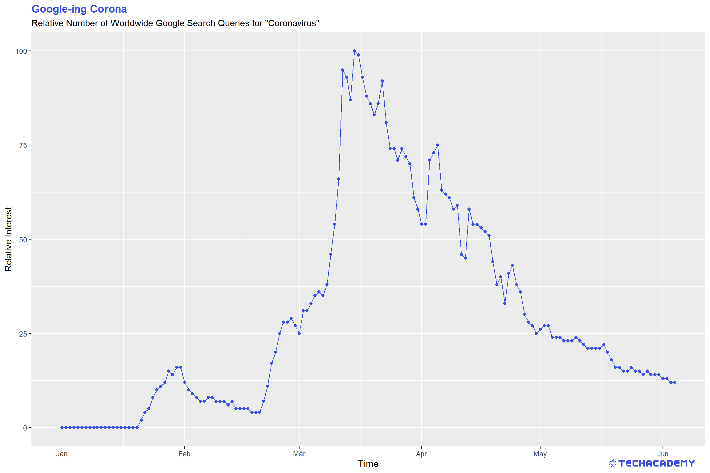
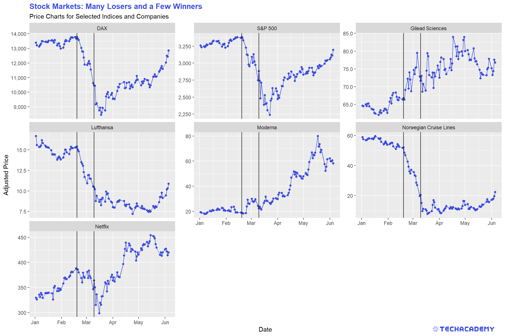
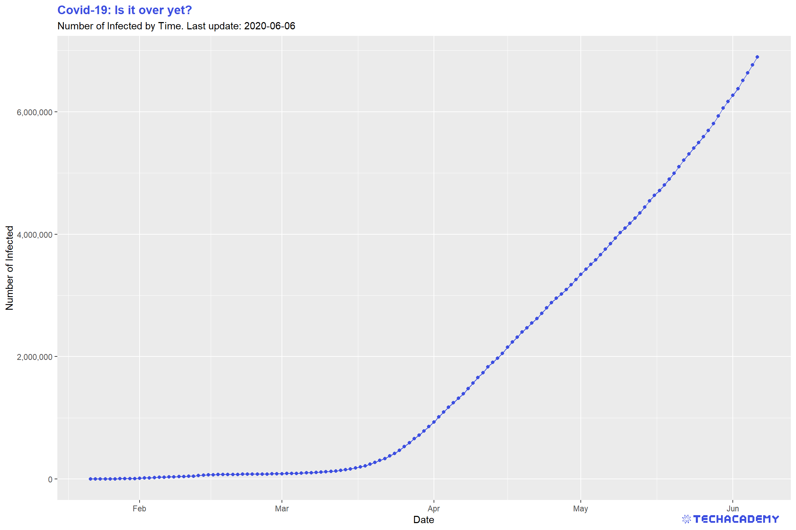
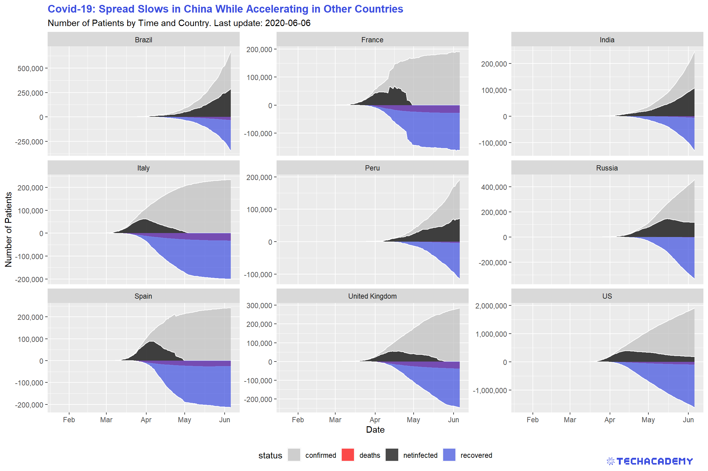
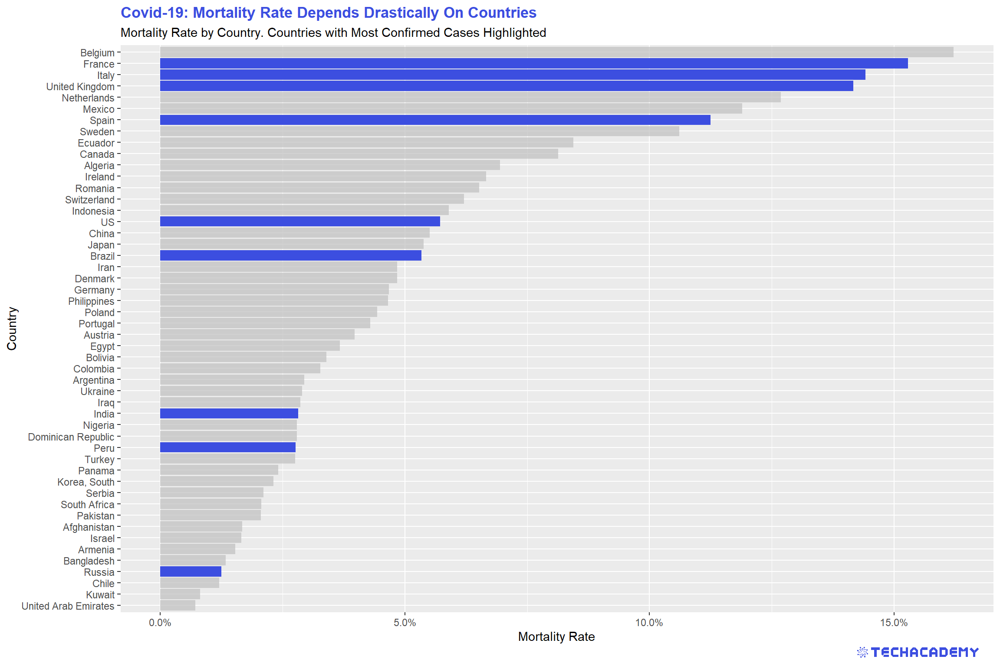

4 Exploratory Data Analysis
Before you can dive into the data, set up your programming environment. This will be the place where the magic happens – all your coding will take place there.
In your workspace on rstudio.cloud we have already uploaded an “assignment” for you (Template Coronavirus). When you create a new project within the workspace “Class of ’20 | TechAcademy | Data Science with R”, your own workspace will open up. We’ve already made some arrangements for you: The data sets that you will be working with throughout the project are already available in your working directory. We also created an RMarkdown file, with which you will be able to create a detailed report of your project. You can convert this file into a PDF document when you have completed the documentation. Open the file “Markdown_Corona.Rmd” and see for yourself!
On JupyterHub you will find the folder “coronavirus”. There, you will find a folder with your name – please create and store your Jupyter notebooks inside there. All the necessary data is stored in the folder “data” which is also located in the “coronavirus” folder.
4.1 Import, Clean and Transform the Data for Your First Plot
In this section you will get to apply the basics of working with data: You will import, clean and transform the data so that you will then be able to visualize it in the next step.
Visualization is one of the most helpful methods to get a feeling for the relation of the various variables of the data set. As already mentioned, this process is called Exploratory Data Analysis (EDA).
Did you know that Google provides quite extensive public access to the relative number of search queries over time? You can simply type in a keyword and Google returns the public’s relative interest in that topic over time. First have a look at the Google Trends website for yourself. An interesting way to ease into the whole topic of the coronavirus outbreak is to look at a plot of the Google Trends development with respect to the virus. To visualize the number of people searching for “coronavirus” online, first import the Google Trends data set into your workspace and name it accordingly. We have already downloaded the data for you. It is always helpful to give meaningful names to your data sets and variables so that you don’t get confused later on when you have several different data sets and variables in your workspace.
Now it is time to get a quick overview of the data set. What is the structure of the data set, which variables does it contain, what is the type of the variables? What is noticeable?
Before we can get started with the actual visualization, we have to tweak the data set a little so that the different commands will work later on. Sometimes this is easier said than done and very often the format of the data is not usable at first – you have to figure out why and how to manipulate the data make it useful for your next steps.
To create a time series plot in the next step, it is necessary for the date variable to have the right format. Do you already know how to do that from your DataCamp courses?
After having changed the data to a coherent and meaningful format, it is now time to create our first line plot. Before you actually plot the data, it is helpful to envision what it could look like. Which variable has to be on the x- and y-axis, respectively?
This is what a visualization could look like, but don’t worry, your result does not have to look exactly like this as long as the structure of the plot is similar.

Looking at the line plot, you can see a clear pattern with respect to different dates. Do you know what happened on the dates the spikes in searches occurred? If you have time you can play with the visualization and refine it, add labels and change colors, but that is not too important, so you can first have a look at the following steps and come back to this when you have completed the rest.
R provides many different ways to import data. For starters, use the built-in base function read.csv() and define the path to the Google Trends file in the argument of the function. We have stored all data for your project in the folder data. Don’t forget to use quotation marks ”...” for the path – you always need to use them when you specify string-variables in R. Also, you will need to adapt to the R-way of specifying paths. Defining a file path can either be done with \\ or /, but not via a single backslash \ like in your explorer.
Use the base functions str() and summary() to print useful information on the data type and summary statistics for your gtrends data set.
Converting data types is relatively straightforward. Just use the useful functions in the format as.<<insert data type here>>. If you don’t convert the date variable from a factor to a more useful data type, you will have problems plotting it.
For your first plot, use the simple base function plot() and define the two relevant input vectors for the time and the relative number of searches. While this function is great for very fast initial plots, you will need a more advanced graphics package later on. Do the same plot again with ggplot2. That gives you way more control and flexibility over plotting. Remember from your DataCamp courses that you first need to install a package once and then load it with the library() command at the beginning of your R session.
To import csv-files into your Jupyter notebook and to convert them into a pandas data frame use pandas’ .read_csv() method.
To read the data, you have to tell pandas the path to the files in the data folder from your current directory. To traverse upwards in the directory structure, you have to use two dots, so something like ../data/<here the rest of the path> should work. For the first plot you need the Google trends data.
Afterwards use pandas’ .head(), .describe(), and the .info() methods to explore the data: Are the dates actually stored as datetime objects? If not, you can change objects to datetime with pd.to_datetime(df.date, format=’%Y-%m-%d’), where df stands for the data frame.
It would probably make sense to have the date-column set as index: You can do so by applying the .set_index(‘date’) method to your data frame.
Now the only thing left to do is to plot your first graph!
Make the plot visually more appealing by using additional pyplot methods and by passing additional arguments to those methods. For example:
- For the
.plot()method you can use additional keyword arguments, likecolor,marker,linewidth,linestyle, andmarkersize. - Use the
.legend()method to add a legend. - You can also add labels to your x- and y-axis by passing a string argument to the
.xlabel()and.ylabel()methods. - You can rotate the ticks on the x-axis with
.plt.xticks(rotation=45).
Find a full list of methods in the official matplotlib documentation.
4.2 Visualize Stock Data
The coronavirus had an impact on many areas of our lives and our economy, the stock market being one of them. When visualizing the stock data, the impact becomes evident. Many firms suffered from the outbreak, others profited. Let’s have a look!
As before, you first need to import the stock market dataset and name it accordingly. Once more, it makes sense to get an overview of the data to see what you are working with. Can you already see which variables need to be transformed?
Before visualizing the stock data, try to change the names of the stock symbols, so that people who are not familiar with them know which firm’s stocks are being analyzed.
This time, we will not create a single line plot but several next to each other, which allows for a better comparison of the stock price development of different firms. The following plots are supposed to give you an orientation of what your result could look like:
You can often see vertical lines in the plots to highlight when an event happened that had a severe impact on a variable. Try to add that to the plots. Here is an idea of what it could look like:

After you visualized the data, think about what the data tells you and which key statements you can derive and communicate with your visualization. Take those ideas and put them into the title and subtitle of the graph. This practice leads the consumers of your visualizations directly to your key message. People looking at your graph for the first time will then more easily and faster spot the important takeaways from your plot.
Use the package ggplot2 and add facet_wrap() after you specified the essential geom(s) to automatically create individual subplots.
Then look at how much more complex this task is in Python and be happy that you chose R.
To draw vertical lines to your plots, use another geom and simply add it to your ggplot.
You can label individual entries of a factor-type vector. That doesn’t change the specific entries in the vector, but changes how the entries are displayed for example in plots. Use the function levels() to define the levels of the stock symbols.
Import the stock data as a data frame and explore the data, just as you’ve done with the Google Trends data. Notice that by using only the .head() method, one could think that the csv-file contains only data about one single stock – this is not the case.
It would probably be easier to work with a data frame which only contains the columns we actually need, i.e. symbol, date, and close. Also, it would probably be nicer to work with the data frame if the date column would be the index column, the values of the symbol column would represent the column names, and the close prices would be the data frame’s values: Let’s use pandas’ .pivot() method to achieve both at once: df.pivot(index=..., columns=..., values=...).
Check if the new index is formatted as a datetime object. If not, apply the same method as you did on the Google Trends data frame.
Now take a look at the whole data frame: Do you notice the NaNs? Try to find out why this is the case by searching it up online. However, if we would plot this data frame in a plot, we might end up with broken lines. One workaround to avoid this, could be to use the .interpolate() method on the data frame, which fills the NaN values using a linear method by default.
To create multiple plots in one figure you can use the example code below as a template. The code starts by creating a figure object, which is a container for plot elements. The function plt.subplot(2,2,i) adds a plot in the i-th window of the 2x2 grid inside the figure. Then, the data frame is filtered by the Netflix stock and the plt.plot() method is used to create the first plot.
Continue filling the next windows of the 2x2 grid with stock data from other companies.
fig = plt.figure(figsize=(20,8))
plt.subplot(2,2,1)
data = stocks[stocks.symbol== symbols[‘NFLX’]]['close']
plt.plot(data)You can add a vertical line to point out a date where stock prices started to become very volatile with plt.axvline(x=pd.Timestamp('YYYY-MM-DD'), ymin=0, ymax=1), whereby x is the coordinate for the x axis, ymin is the bottom and ymax the top of the line.
You used pretty much the same code four times in a row, in such a case it is often good to use a for-loop of the form:
Can you find a way to reduce your code using a for-loop? Try to address the changing parts of your code with the index i in the for-loop.
Afterwards you can try to make your plot look nicer.
Use fig.suptitle() to add a title.
If you feel like needing to adjust spaces between the plots, you can use the plt.subplots_adjust() to do so.
Try using fig.autofmt_xdate() to format the date tick labels. If you need help with these functions, try to find out what they do and how to use them in the matplotlib documentation.
4.3 Visualize Covid-19 Infection Data
4.3.1 Worldwide Development of Confirmed Cases
Over the last couple of months you heard new numbers about the coronavirus every day, so it is time to bring some clarity into the development of the virus in different countries over time. So now that we had a first look at certain data sets with a connection to the coronavirus, it is time to look at the coronavirus data itself.
The first data set that you are going to import contains data about the number of confirmed cases all over the world. Name it accordingly and once again, have a look at its structure.
As you can see, we have missing values in the confirmed variable. Your task will be to replace those with the value 0. We can do this because we can assume that if there is a missing value it is most likely that there has not been a confirmed case yet.
Once again it makes sense to create a simple line plot to take a look at the number of confirmed cases over time. In the first step, we will have a look at the worldwide development. For that you will have to transform the data. At this point, our data set has a separate number of confirmed cases for each country per day. In the end, our transformed data set should summarize this so that we only have one number per day that represents the aggregate number of confirmed cases worldwide.
This is what your plot could look like: You can see that the line plot has a small kink around February 10th. Restict the y-axis if you don’t see it on first glance to the interval \(y =[0,100.000]\). What happened at that point in time that had such a great impact on the number of confirmed cases?

Import the new panel data set confirmed.csv and analyze its structure
like you did in the previous exercise. Are you noticing the NA entries in the variable confirmed? Replace those missing values with 0. There are several ways to do that, one is using ifelse(). After you replaced the missing values, check if you were successful by summing up all entries in the logical vector generated by is.na(). If this sum is zero, you have replaced all NA values. This works because R treats the logical values TRUE and FALSE as 1 and 0.
Also, read.csv() by default imports dates as factors. Transform the column time to the appropriate date variable type.
You’ve probably already heard about the tidyverse – a highly influential and very useful set of packages that all follow a common philosophy. Even if it might be tough to get used to the tidy way of thinking, you will love it once you have understood it.
You can use the dplyr package to summarize confirmed by time. Remember the pipe-operator %>% from the DataCamp course Data Manipulation with dplyr in R? This operator will come in handy to build longer data transformation pipelines. Use a combination of the dplyr functions that group and summarize data. In case you don’t remember their names and arguments, familiarize yourself with the dplyr documentation by typing ?dplyr into your console or by googling the problem. In general, ? leads you to the documentation of packages or functions in R.
Use ggplot2 again to visualize your newly generated time series. Don’t forget to provide meaningful labels for your title, subtitle and axes.
Import the confirmed.csv data as a new data frame and fill the empty spaces (NaN) using .fillna(0). Afterwards you can use df.isna() to check if there are no missing values in the data frame. This will return True (corresponds to 1) and False (corresponds to 0) if there is a missing value or not. If you sum() over this data frame, you get the amount of missing values which should be zero now.
Since we are not interested in every single country’s number of confirmed cases yet, the idea is to group all dates together by summing up the numbers of confirmed cases for each day. You can use pandas’ groupby() function, which itself returns no result – you also have to apply an aggregation function like groupby(by=’time’).max(), groupby(by=’time’).mean() or groupby(by=’time’).sum(). For this task you can use the latter.
The time column should now be set as index – make sure that its values are formatted as datetime objects.
Finally, you can create the graph by passing the right column of the data frame to the plot() method of the matplotlib library.
4.3.2 Stacked Area Plot by Country
You have gained some experience in creating simple line plots so let’s take it a step further and create a stacked area plot for the countries with the highest number of confirmed cases. The idea behind this is that you add up individual time series and color the area in between by country. This is a little tricky but with patience you will get there. The first step will be to select the countries with the highest number of confirmed cases on the most recent date of the data set. The result should look similar to this:
First, extract the names of the nine countries that are most affected on the most recent date. Use filter() to only keep the most recent date. You should use arrange() to order the data frame in descending order by confirmed. Then extract the top nine entries and select the column country. Save this vector as top_countries for later use.
Now prepare the data set for plotting. Filter it such that only data for top_countries remains. You might want to use the %in% operator for that task.
To draw the plot, use ggplot2 and add the geom that generates an area plot.
The countries in the plot are not ordered in an ideal way for this visualization – countries are sorted alphabetically. Remember levels() that define the ordering of factor variables? Order those by confirmed cases, such that the most affected country comes last.
First you need to know which are the 9 countries with the most confirmed cases. Use the groupby() function with the appropriate aggregation function.
Afterwards you can sort the returned data frame with the df.sort_values() function and use index slicing to get only the first 9 entries of the data frame. Then store it under the variable name top_countries.
Now we know which countries should be visualized in the plot. For each of these countries we need the amount of confirmed cases over time. To get the confirmed cases for one country, we filter the whole data frame by this country and afterwards group the filtered data frame by time.
Because we have to repeat the same procedure with each of the 9 countries, it is a good idea to use a for-loop and iterate over the list of countries stored in top_countries.
# store data in list
confirmed_list = []
# for-loop over the countries
for country in top_countries:
confirmed_list.append(#your code to filter confirmed cases by country)In each iteration of the for-loop, append only the values of confirmed cases to a list which you instantiate before the for-loop. At the end of the for-loop you should have a list of pandas series (data frame with just one column) , each containing only the amount of confirmed cases per country over time. To get only values of a pandas series, you can use df[<column_name>].values.
This list contains the amount of confirmed cases, but not the dates. The dates are the same for each country, so we just need to get a pandas series of one of the filtered countries, select the time column and store it under the variable dates.
To get the stacked area chart, you can use the matplotlib function plt.stackplot(x,y,labels). For the y values you can just pass the list of data frames which we created before and the x values should be the list of dates. The labels are the corresponding names of the countries.
4.3.3 All Curves in One Plot
Having had a closer look at the confirmed cases, we can go ahead and get more into detail by adding data of dead and recovered patients. But we don’t want to keep the three data sets separate, so your next task is to merge the three data sets before we analyze the numbers more thoroughly. You can have a first glimpse at the data and look at the structure. You can see that all three data sets share the same structure, and identical observations share the same ID. This makes it easy because it allows you to merge them by ID.
Similar to your first data set, the merged data frame has missing values. Replace them once again with the value 0.
When talking about the coronavirus many people are only mentioning the total number of confirmed cases. But it makes sense to keep track of the currently infected patients and not only the total infected. This way it is easier to see whether the virus is actually receding or still on the rise. This means we want to have a look at the number of confirmed cases that are still infected and not dead or healed already. For this you can subtract the number of deaths and recovered cases from the number of confirmed cases and create a new variable that you can call netinfected. Visualize the development of confirmed cases, deaths, netinfected, and recovered in an area plot for the top 9 countries.
A quick remark on the underlying data for recovered and thereby also netfinfected: At first, Johns Hopkins University (JHU) provided the variable recovered. Over time, gathering reliable data on the number of healed patients grew increasingly difficult.
German hospitals for example have no legal obligation to report when a patient recovered.
That’s why JHU stopped providing this data. As a quick work-around, we assume that two weeks after patients were infected they count as recovered if they did not die. This is a rough estimate and will not always be true, but sometimes you have to make some reasonable assumptions to work with real-world data.
If everything went well your result will look similar to this:

Import the data sets deaths.csv and recovered.csv and check out their format and structure. Notice that similarly to confirmed.csv, they also include the column id, which uniquely identifies a single date for one country across those data sets.
Now merge the three data frames by id into df_merged, which should include all three quantities confirmed, deaths, and recovered. You can either use the base function merge() or the more powerful ..._join() from the dplyr package. ... stands for either left, right, inner, or full. Those adjectives define which columns to keep after merging. The dplyr cheat sheet provides a more detailed explanation on those tools.
After you merged the data frames, again replace the NA values with 0.
Now create the new variable netinfected. Use $ to specify the new variable and simply define it as the appropriate subtraction involving the three variables confirmed, deaths, and recovered.
After once again filtering the top_countries from the full data set, we want to transform the data frame from a wide format into a long format. You have probably heard of gather() and spread() from the tidyr package in your courses. Those functions work well for this task, but there is an enhanced set of functions from the same package that just got released and work even more intuitively. Load library(tidyr) and familiarize yourself with the new functions pivot_longer() and pivot_wider(). Use one of them to accomplish the task. Use the structure below.
df_merged %>%
# filter here
# mutate here (optional)
pivot_...(<<first var to pivot>>:<<last var to pivot>>,
names_to = "...",
values_to = "...") %>%
ggplot() +
...Your first attempts might look totally weird. Play around with ggplot2 by varying the type of plot (e.g. line or area). You can visually separate the individual columns by assigning the variable status to the arguments color = and linetype = within the aesthetics of geom_line(aes(...)).
Another enhancement of your visualization is to plot recovered and deaths on the negative part of the y-axis. This avoids overplotting and enables a better communication of the data. In the previous code chunk above is a predefined space to do just that transformation. Use mutate() to replace the values of the two variables with its negative ones.
First, we need to merge the data frames confirmed, deaths and recovered – which means we want to form one big data frame containing the information of the three individual data frames. They share the same column id and can be merged over this value. You can merge two data frames with the pandas merge function: merged_df = pd.merge(df1, df2, on=’id’). Now you still need to merge the third data frame.
After the three data frames are merged, we have to fill up NaNs (missing values) with the pandas df.fillna(0) function.
Now we want to compute the amount of netinfected people, which can be computed by netinfected = confirmed – recovered – deaths. Create a new column in the data frame and compute this value for each row.
We want to plot four time series per country. Therefore, we filter the complete data frame after the corresponding countries and use, similar to the exercise before, the df.groupby() function and group now by time. Again we have to use the right aggregation function on the groupby() function. But this time we need – besides the confirmed column – also the deaths, recovered and netinfected columns. You could use a simple line plot with plt.plot() or the function plt.fill_between(x,y) to get a plot which looks similar to the given example.
It is a bit tricky to get several plots into one figure, therefore we provide again an example code.
Fill the plt.fill_between() or plt.plot() function in each iteration of the for-loop with data of another country and the graphs will be plotted in the corresponding windows of the plot-grid.
When you run your code and you can see a grid of plots, each showing four time series of different countries, you can be proud of you. You mastered an advanced concept of the matplotlib library – which can be frustrating from time to time.
Now you can beautify the plot a bit. Add the name of the country as title to each plot (plt.title(‘Taka-Tuka-Land’)). The plots for deaths and recovered contribute negatively to netinfected and should be plotted as negative values as shown in the example plot. Furthermore, the x-ticks should show the date, but they are not readable at the moment.
Try to rotate the ticks and plot only every \(10^{th}\) date. To plot only every \(n^{th}\) tick is a bit challenging and we need help! We google something like python matplotlib only nth tick. Most of the time this will lead to the website Stackoverflow where somebody had the same problem as you and got help from other programmers. Look into the answers of this Stackoverflow post. Several users proposed possible solutions. Can you find one which works for you? And don’t be afraid if you don’t understand some parts of their code, try-and-error is a good way to learn and find solutions.
4.3.4 Barplot by Country
Although this is a great way of visualizing the development of the virus outbreak, some characteristics are hard to make out in this kind of visualization. Hence, it makes sense to take the same measures and create a bar plot with them. This should look like this:
Use the same data frame and transformations from wide to long as in the last plot. Additionally, filter only the most recent snapshot by using filter(time == max(...)). One of the great features of ggplot2 is that you can easily switch from one type of plot to another one, just by changing the geom. For a barplot, use geom_bar and specify its aesthetics correctly within that geom to create four different bars for each country.
You might want to flip both axes to have your barplot better structured. There is a very intuitive command to achieve that in ggplot2. Google yourself to the solution.
Use the data frame from before, i.e. the data frame should contain at least the columns representing countries, numbers of deaths, time, net infected, and number of confirmed cases.
If you happen to have converted any column to its negative, then convert it back to positive.
Since we are not interested in the whole time series, but only in the latest data available, we can filter the data frame by the latest available date. You can use .max() to get the highest date in the appropriate column and use df[df[‘time’] == latest_date] to filter by the columns of that date.
We only want to plot nine countries with the highest number of confirmed cases: Sort by the appropriate column doing df.sort_values(by=[‘...’], ascending=False), and then slice the data frame such that it only consists of 9 rows.
This time we are going to use pandas for plotting (which uses matplotlib’s pyplot - so it is actually still creating matplotlib objects). We do so because it may be more intuitive in this case.
Our data frame should only contain the relevant columns, namely country, confirmed, deaths, recovered, and netinfected. You can select these columns by passing a list of column names in an indexing operator: df[[‘col1’, ‘col2’, ...]]. Afterwards, set the country column as the data frame’s index.
Finally, create a figure using plt.figure() and plot the horizontal bars:
Notice that, as already mentioned, we are using pandas’ df.plot.barh() indestad of matplotlib’s plt.barh() method (which we are going to use in the next exercise).
gca() stands for get current axes and returns the current axes instance on the current figure. If the current axes don’t exist, the appropriate axes will be created. You can try to create the plot without the ax keyword argument and see what happens.
Don’t forget to adjust/add title, labels, etc.
4.3.5 Mortality Rate
Apart from the number of net infected, the mortality rate is another measure that is important for evaluating the risk of the coronavirus pandemic. Which variables would you choose to calculate the mortality rate? Would you pick deaths/confirmed cases, deaths/recovered or deaths/net infected? Choose a measure and give a reason for your decision. Then calculate a new variable for the mortality rate. In the next step, create a bar plot of the 35 countries with the highest mortality rate. Are you surprised by some countries that show up in this ranking? Is there a country with an extraordinarily high mortality rate that does not seem to make sense? Could you come up with a reason for this? Is there a way to filter the countries so that your barplot becomes more representative of the actual mortality rates?
In the next step, highlight the countries with the highest number of total confirmed cases. The finished bar plot that has the nine countries that have the most confirmed cases highlighted should look similar to this:

Even after filtering out outliers, you can still see that there is a big difference between the countries with regard to the mortality rate. Can you explain this difference? Is it the actual mortality rate that varies between countries or is another factor at play here? What about testing? How does it affect the mortality rate?
As a Data Scientist, it is especially crucial to think about what the data tells you. Do not always take your fancy results at face value. The newly calculated mortality rate might be such a case, where you shouldn’t jump to conclusions. Why do you think it is problematic to calculate the mortality rate like we did during an ongoing pandemic? If you had all the resources that you needed, how would you collect data and calculate the mortality rate? And when would you do it?
Again, filter only the most recent snapshot by using filter(time == max(...)). Now use mutate() to calculate the mortality rate and add it to the data frame as a new column. You already know how to do a barplot from the previous hint. You can once more use arrange() to order the rows in descending order – this time by mortality.
To highlight certain columns of the plot, use the powerful package gghighlight and simply add its function for this task to your plot. Specify the countries you want to highlight as an argument. Maybe top_countries from the previous sections comes in handy here?
The tricky part here is to highlight countries with a high number of confirmed cases. The basic idea is to create two data frames: One with the top X countries by number of confirmed cases and another one with the top Y countries by death rate. Then iterate through each country in the second data frame (mortality rate), and see which countries can also be found in the first data frame (confirmed cases). For countries where this is the case, we know we have to color them in a different color.
Let’s start by creating those two new data frames: You can reuse the data frame that you used just before the slicing step in the last exercise and do the following:
The first data frame should contain the top 20 (or so) countries with the highest number of confirmed cases (you need to sort and slice). We need this data frame only to determine the colors of the bars.
For the second one you need to add a new column displaying the mortality rate for each country: df.assign(‘mortality_rate’=….). In place of the dots, you will need to insert your formula of choice (for example you could divide the deaths column by the confirmed column). Afterwards, filter the data frame by the 35 countries with the highest mortality rate. This is the data frame that will actually be plotted.
Now we can take care of the coloring: When plotting with plt.barh(), matplotlib allows us to pass a list of colors as an argument, whereby the first color in that list determines the color of the first bar, the second color determines the color of the second bar, and so on. Note that the first bar actually corresponds to the first row in the data frame.
For example [‘red’, ‘red’, ‘yellow’] would color the first and second bar red, but the third bar (i.e. third row in data frame) yellow.
For us, this means that we can iterate through each country in the highest_mortality data frame and check if that country is also in the highest_confirmed data frame. If this is the case, we know we have to color that bar in a different color:
cols = list() # initiate empty list
for country in highest_mortality[‘country’]:
# if country also in highest_confirmed, then highlight in blue
if country in highest_confirmed[‘country’].values:
cols.append(‘blue’)
else:
cols.append(‘grey’)Again, understand that the first color in the cols list determines the color of the first bar (i.e. the first row, or country, in our data frame).
Can you create the color list in one line making use of python’s list comprehension?
Now, everything is ready to be plotted with plt.barh(highest_mortality[‘country’], highest_mortality[’mortality_rate’], color=cols).
4.4 Visualization with Maps
This part will be the final and most advanced part of the EDA – but also the most rewarding. If you have ever checked the news during the coronavirus outbreak you must have come across a world map with information of how the virus is spreading and how badly each country is affected. You will now build your own map where you can show which countries are affected and how high the number of confirmed cases is. Instead of having to rely on others’ decisions regarding the visualization of data on the virus, by creating your own map you can decide freely which type of maps visualization you prefer and which information you want to highlight.
You already have coordinates included in your data set but some data transformation is still necessary. It can get a little tricky, but as before we will give you hints along the way so that you will have an idea of what to do.
Up until this point the basic ideas of the tasks were the same for the Python and R track so the introduction to the exercises was the same, but for the maps tasks, the output will vary significantly between the tracks. That is why you will find every information necessary as well as the output you are working towards in the respective track boxes.
4.4.1 Color Countries by Confirmed Cases
For this section, we’ve already prepared a new data set. Load world_map.csv into your workspace and have a look at the included variables. It contains all data to draw all countries’ borders on a map. Also, we’ve merged the Covid-19 data on a single day to the spatial data.
We will start with a basic map that shows all countries on a world map and colors them according to the number of confirmed cases. How convenient that we can also use our favorite graphics package ggplot2 for that task. Supply the plot’s aesthetics with the longitude and latitude as x and y-coordinates, respectively. Additionally, every country is identified by a unique group. We need to supply this to the aesthetics as well by aes(..., group = group) such that the function knows which data points belong to the same country. As geom, we will use geom_polygon() to draw the borders. Use the argument fill = ... to determine the color of a country based on confirmed.
A problem you will run into with this technique of map generation is that the plot will be distorted if you change its size. Countries will become wider or longer than you might be used to when looking at a typical map. This issue is connected to the broader challenge of projecting areas on a ball (the earth) from a 3D element to a simple 2D map. Check online how you can handle the proper projection in ggplot2 and implement that in your map.
As a first step, we want to visualize the outbreak in each country with circles, where each country’s circle size is is dependent on the amount of confirmed cases.
Let’s start by importing the familiar confirmed.csv file.
The goal of our map is to inform the viewer about the number of confirmed cases per country for the latest date available: Find out the latest date and filter the data frame by that date.
Filter the data frame by the columns of interest to facilitate the iteration over each row. The columns are: country, latitude, longitude, and confirmed.
Now that our data frame is in the right format, it is time to check out the documentation of the ipyleaflet library. This is the library we will use to create our maps.
For our first map, we will use the module “Circle Marker”. Please be sure to take a look at the example in the documentation before proceeding, especially for knowing which modules you need to import!
If you copy-paste-run the example in the docs, you can see that it plots only one single circle on the map – but we want multiple circles!
Let’s start by making sure that when creating the instance m of the Map class you pass the positional argument center=(48, -2) (which might differ from the example in the documentation):
m = Map(center=(48, -2), zoom=9, basemap=basemaps.CartonDB.Positron)
# Feel free to change the zoom and layout of the basemap.In order to plot multiple circles, you may want to iterate through every row in your data frame. Doing so, you will find it helpful to use the following technique:
for i, country, long, lat, nr in confirmed_df.itertuples(index=True):
pass # your for-loop body hereIn each iteration you would need to create an instance of the CircleMarker class.
Additionally, call the methods .location(), .radius(), .color(), and .fill_color() and pass on the right arguments. In the same iteration call the .add_layer() method with the above instance of the CircleMarker as its argument.
Note: Think about a way to roughly size the circles, such that the viewer has an idea about the number of cases in each country listed in our data. Obviously, if you just set the number of confirmed cases as the radius, the circles are going to look way too big. Maybe use something like the logarithm of that number?
It probably won’t look great on your first try – just give it another shot!
This is what your map could look like:
4.4.2 Enhance Your Map
The next map will be the most advanced one – plot all European countries, color them according to the number of deaths and draw a label that states the number of deaths in that country. First, extract the countrycode of all countries within Europe. We provide you with a country lookup table that defines the region (e.g. Europe) for every individual country. Import this data set and extract the desired country codes into a vector. Use this structure:
country_lookup <- read.csv("your/path/country_lookup.csv")
country_lookup %>%
filter(region == “<<specify region here>>”) %>%
# in case you want to exclude more countries, filter them here
pull(alpha.3) -> countrycode_europeNow you want to calculate the geographic center of a country. This will help you to place the label on the country later on. Generate that data set with the following hints:
world_map %>%
# group and summarize the variables of interest here
# filter your data frame to only have the relevant countries
filter(countrycode ...) %>%
# create column with labels:
# Use “\n” within a string as a line break between
# the country name and the number of confirmed cases
# generate a new variable that contains the label in a string format
# then assign everything to a new data frame in the last line
... -> label_centroidsNow you can generate a map in the same way as in the first maps exercise. Filter all European countries from world_map using countrycode_europe. After adding the polygons, use the package ggrepel and its function geom_label_repel() to draw the labels. Provide the required argument(s), and define aes(…) differently than in geom_polygon(). Hint: use your newly generated data frame label_centroids. It is important to set inherit.aes = FALSE, otherwise ggplot2 inherits the aesthetics from the geom before.
Now enhance the appearance of your plot by defining another color scale for the countries. Just having different shades of blue is not that helpful for distinguishing the countries.
This is what your map could look like:
For our last map, we are going to create a world map and color each country by its number of confirmed cases.
You should be able to use the data frame for confirmed cases from before. But before continuing, you may want to have a look at the ipyleaflet documentation for the layer GeoJson, which we are going to use here.
In contrast to before, when we only needed latitude and longitude for a country to place our circles, we now need all the coordinates of each country’s border to be able to draw it.
Thus, we’ve prepared a .json file for you with all border coordinates (i.e. country polygons) for each country, which is stored as geo.json.
You can load .json files into your jupyter notebook doing:
This file contains a ton of data. Just notice that each list element in the dictionary key features contains the name of the country, as well as its coordinates (for example print world_map_dict['features'][0]).
In order to use the confirmed cases data frame for this map, we need to convert it into a dictionary with country names as keys and the respective number of confirmed cases as its values. We can achieve this in one line with dict comprehension and python’s built in zip function: dict(zip(df.country, df.confirmed)).
Now that we have our confirmed cases and the borders dictionaries, we may now take care of the coloring.
Again, we already prepared a json file called colors.json. Looking at its content in your Jupyter notebook, you will see that it has numbers stored as keys, and rgb-color-codes stored as the respective values. The numbers are actually the number of confirmed cases to which the colors “belong” to.
ipyleaflet requires us to make two lists out of this dictionary, because we need to pass both as separate arguments when instantiating the map’s layer.
You can create both lists in two lines using python’s list comprehension:
Notice how we had to use python’s float method to convert the numbers to float, as they were stored as strings in our colors.json file.
That’s pretty much it! We can now create the layer-instance of the Choropleth class:
layer = ipyleaflet.Choropleth(
geo_data=world_map_dict,
choro_data=confirmed_dict,
colormap=LinearColormap(colors=color_list, index=nr_list,
vmin=0, vmax=nr_list[-1]),
border_color='black',
style={'fillOpacity': 0.8, 'dashArray': '5, 5'})
m = Map(center=(43, 0), zoom=4)
m.add_layer(layer)
mFeel free to play around with the maps you created. Maybe try to insert some controls (see under controls in the ipyleaflet documentation), like the zoom-bar you can see in the picture below, or a full screen button.
This is how your map could look like:
Congratulations! Because you put in the effort and determination you managed to perform data transformations as well as visualization techniques that are highly relevant for modern Data Science. You can proudly say that you now have acquired basic skills in the field of Data Science by successfully completing the first part of the project. If you are part of the beginner track you have fulfilled the necessary requirements. However, we do recommend that you have a look at the second part of the project and try and solve it as well. This is the part where it really gets interesting because we will have a look at methods of predicting the future. Sounds exciting? Then get ready!